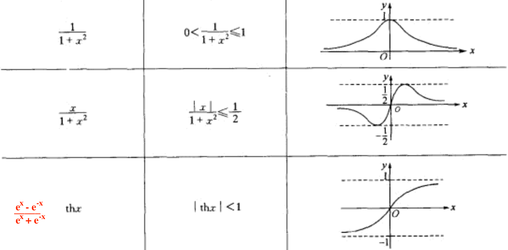
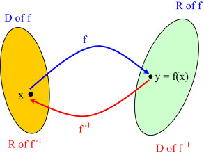

性质
有界性¶
注意
讨论有界性首先要指明区间，否则无从谈起。
设 \(I\) 是函数 \(f\) 定义域的某子集，
-
若 \(\exists K\) 使得 \(\forall x\in I\) 都有 \(f(x)\le(\ge) K\)，则称 \(f\) 在 \(I\) 上有上（下）界，\(K\) 即 \(f\) 在 \(I\) 上的一个上（下）界。
函数若有上界（下界），则上界（下界）就有无穷多个，但上确界（下确界）是唯一的。
-
若 \(\exists M\) 使得 \(\forall x \in I\)，都有 \(\textcolor{red}{|}f(x)\textcolor{red}{|}\le M\)，则称 \(f\) 在 \(I\) 上有界。
\(f(x)\) 在 \(I\) 上有界 \(\Longleftrightarrow\) \(f(x)\) 在 \(I\) 上有上界且有下界。
-
若这样的 \(M\) 不存在，则称 \(f\) 在 \(I\) 上无界。即：\(\forall M>0\)，\(\exists x_0\in I\)，使 \(\textcolor{red}{|}f(x_0)\textcolor{red}{|}>M\)。【命题的否定】
无界可分为：无上界、无下界、既无上界也无下界。
常见有界函数
\(\sin x,\cos x,\arcsin x,\arccos x,\arctan x,\arccot x,\dfrac{|x|}{x}\)， 
判断有界性的方法
- 利用定义：对 \(|f(x)|\) 进行放大，得到一个常数（上界）\(M\)。
- 求函数最值：若存在最大（小）值，则有上（下）界。
- 有界函数的运算：在区间 \(I\) 上， 有界 \(\pm\) 有界 = 有界 有界 \(×\) 有界 = 有界 有界 \(/\) 有界 = 不确定
- 利用函数极限的局部有界性：
\(\lim\limits_{x\to x_0^+}f(x)\) 存在 \(\implies\) \(f(x)\) 在 \((x_0,x_0+\delta)\) 内有界
\(\lim\limits_{x\to x_0^-}f(x)\) 存在 \(\implies\) \(f(x)\) 在 \((x_0-\delta,x_0)\) 内有界
\(\lim\limits_{x\to x_0}f(x)\) 存在 \(\implies\) \(f(x)\) 在 \((x_0-\delta,x_0+\delta)\) 内有界
\(\lim\limits_{x\to +\infty}f(x)\) 存在\(\implies\) \(f(x)\) 在 \((X,+\infty)\) 内有界
\(\lim\limits_{x\to -\infty}f(x)\) 存在\(\implies\) \(f(x)\) 在 \((-\infty,-X)\) 内有界
\(\lim\limits_{x\to \infty}f(x)\) 存在 \(\implies\) \(f(x)\) 在 \((-\infty,-X)\cup (X,+\infty)\) 内有界 - 利用闭区间连续函数的有界性：\(f(x)\) 在闭区间 \([a,b]\) 上连续 \(\implies\) \(f(x)\) 在 \([a,b]\) 上有界
在开区间上不满足：\(f(x)\) 在 \((a,b)\) 上连续 \(\nRightarrow\) \(f(x)\) 在 \((a,b)\) 上有界，例如 \(f(x)=-\frac{1}{x}\) 在 \((0,1)\) 上连续但无界。
-
\(f(x)\) 在开区间 \((a,b)\) 上连续且 \(f(a^+),f(b^-)\) 存在 \(\implies\) \(f(x)\) 在 \((a,b)\) 上有界 （可推广到无穷区间）
反之不成立，例如 \(\sin\dfrac{1}{x}\) 在 \((0,1)\) 有界，但 \(\lim\limits_{x\to 0^+}\sin\dfrac{1}{x}\) 不存在。
-
利用导数与函数的关系：
-
对于有限区间 \(I\)，有：\(f'(x)\) 在 \(I\) 上有界 \(\implies\) \(f(x)\) 在 \(I\) 上有界 【逆否，\(f(x)\) 无界则 \(f'(x)\) 无界】
证明
dd
$$
\[\begin{align} |f(x)|&=|f(x)-f(x_0)+f(x_0)|\\ &= |f'(\xi)(x-x_0)+f(x_0)|\le |f'(\xi)(x-x_0)|+|f(x_0)|=Ml+|f(x_0)| \end{align}\]$$
注意：
- \(f'(x)\) 在无穷区间上有界 \(\nRightarrow\) \(f(x)\) 在该区间上有界
例如 \(f(x)=x\) 。
- \(f(x)\) 在 \(I\) 上有界 \(\nRightarrow\) \(f'(x)\) 在 \(I\) 上有界 （\(I\) 可以是有限区间也可以是无穷区间）
例如 \(f(x)=\sqrt[3]{x}\) 在 \((0,1)\) 上有界，但 \(f'(x)=-\frac{1}{3\sqrt[3]{x^2}}\) 在 \((0,1)\) 上无界； \(g(x)=\frac{\sin x^3}{x}\) 在 \((1,+\infty)\) 上有界，但 \(g'(x)\) 无界。
在有限区间上，以 \(f(x)\) 或 \(f'(x)\) 有界为条件，只有“\(f'(x)\) 在有限区间上有界 \(\implies\) \(f(x)\) 在该区间上有界”是正确的；以 \(f(x)\) 或 \(f'(x)\) 无界为条件，只有“\(f(x)\) 在有限区间上无界 \(\implies\) \(f'(x)\) 在该区间上无界”是正确的。
在无穷区间上，\(f(x)\) 是否有界与 \(f'(x)\) 是否有界之间没有必然联系。
-
-
\(f'(x)\) 在闭区间上连续 \(\implies\) \(f'(x)\) 在该区间上有界 \(\implies\) \(f(x)\) 在该区间上有界
注意：\(f'(x)\) 在 \((a,b)\) 上连续 \(\nRightarrow\) \(f(x)\) 在 \((a,b)\) 上有界
例如 \(f'(x)=-\frac{1}{x^2}\) 在 \((0,1)\) 上连续，但 \(f(x)=-\frac{1}{x}\) 在 \((0,1)\) 上无界。
关于无界性：
-
有界 + 无界 = 无界
无界 + 无界 = 不确定 （例如 \(x_n=n,\ y_n=-n\) ）
有界 × 无界 = 不确定 （例如 \(x_n=0,\ y_n=n\) ）
无界 × 无界 = 不确定 （例如 \(\{x_n\}=\{1,0,3,0,5,...\},\ \{y_n\}=\{0,2,0,4,...\}\) 均无界，但 \(\{x_ny_n\}=\{0,0,...\}\) 不仅有界，而且是无穷小）
可见：
- \(\lim\limits_{n\to\infty}x_ny_n=0\ \nRightarrow\ \lim\limits_{n\to\infty}x_n=0\) 或 \(\lim\limits_{n\to\infty}y_n=0\)
\(\{x_ny_n\}\) 有界 \(\nRightarrow\) \(\{x_n\},\{y_n\}\) 有界
- \(\{x_ny_n\}\) 无界 \(\implies\) \(\{x_n\}\) 无界或 \(\{y_n\}\) 无界 （若 \(\{x_n\},\{y_n\}\) 均有界，则 \(\{x_ny_n\}\) 有界）
-
判断函数无界的方法：
- 利用函数无界的定义
- \(\lim\limits_{x\to *} f(x)=\infty\implies\) \(f(x)\) 在 \(\mathring{U}(*)\) 内无界 【无穷大必无界】
- 在 \(I\) 内找到一个自变量数列 \(\{x_n\}\) 使得 \(\{|f(x_n)|\}\to+\infty\)（部分函数列无界）\(\implies\) 函数在 \(I\) 上无界
单调性¶
对于区间 \(I\subseteq D\) 上的任意 \(x_1,x_2\)，若 \(x_1<x_2\) 时总有 \(f(x_1)<f(x_2)\)，则称 \(f(x)\) 在 \(I\) 上是单调增加的。
其它形式：\(\forall x_1,x_2\in D,\ x_1\ne x_2\)，有： $$ f(x)递增 \Longleftrightarrow (x_1-x_2)[f(x_1)-f(x_2)]>0 \Longleftrightarrow \frac{f(x_1)-f(x_2)}{x_1-x_2}>0\ f(x)递减 \Longleftrightarrow (x_1-x_2)[f(x_1)-f(x_2)]<0 \Longleftrightarrow \frac{f(x_1)-f(x_2)}{x_1-x_2}<0 $$ 判断函数单调性的常用方法：
-
利用定义：\(\forall x_1,x_2\in D\)，不妨设 \(x_1<x_2\)，判断 \(f(x_1),f(x_2)\) 之间的大小关系。
-
利用导数：设 \(f(x)\) 在 \(I\) 上可导，则：
- \(f'(x)>0\textcolor{red}{\implies}\) \(f(x)\) 单调递增 （ 反之不成立，例如 \(y=x^3\) 在 \(x=0\) 处导数为 \(0\) ）
- \(f'(x)\ge 0\textcolor{red}{\iff}\) \(f(x)\) 单调不减
- \(f'(x)\ge0\) 且“=”仅在有限多个点处成立 \(\iff\) \(f(x)\) 单调递增
注意：若 \(I\) 是开区间，则函数要满足在 \(I\) 上可导；若 \(I\) 是闭区间，则条件可以减弱，只需要函数在 \(I\) 上连续，在 \(I\) 内可导即可。
周期性¶
若 \(\exist T>0\) 使得 \(\forall x\in D\) 都有 \(x\pm T\in D\)，且 \(f(x+T)=f(x)\)，则称函数 \(f\) 为周期函数。
注意：
-
周期函数的定义域一定是无限集。
周期函数若连续，则在一个周期上必有界，在 \(R\) 上必有界。
-
一个函数若是周期函数，则其周期有无穷多个（\(kT\)），一般考虑的是最小正周期（如果存在的话）。
并非每个周期函数都有最小正周期（例如 Dirichlet 函数），但连续的周期函数必有最小正周期。
-
常见函数的周期：
- \(\sec x,\csc x\)：\(2\pi\)
- \(\tan x,\cot x,|\sin x|,|\cos x|\)：\(\pi\)
- \(\cos^nx,\ \sin^nx\) 的周期为：\(\begin{cases}2\pi&n为奇数\\\pi&n为偶数\end{cases}\) 证明
-
若 \(f(x)\) 以 \(T\) 为周期，则 \(f(ax+b)\) 以 \(\dfrac{T}{|a|}\) 为周期。
若 \(f\) 的周期为 \(T_1\)，\(g\) 的周期为 \(T_2\)，则 \(f\pm g\) 的周期为 \(T_1,T_2\) 的最小公倍数。
-
\(f(x)\) 关于 \(x=a,\ x=b\) 对称（两个对称轴或两个对称中心） \(\implies\) \(f(x)\) 以 \(2(b-a)\) 为周期
\[ \begin{rcases} f(x)=f(2a-x)\\ f(x)=f(2b-x) \end{rcases}\implies f(2a-x)=f(2b-x)\xRightarrow{令\ t=2a-x} f(t)=f(2b-2a+t) \]\(f(x)\) 关于 \(x=a\) 和 \((b,0)\) 对称（一个对称轴一个对称中心） \(\implies f(x)\) 以 \(4(b-a)\) 为周期
\[ \begin{rcases} f(x)=f(2a-x)\\ f(x)+f(2b-x)=0 \end{rcases}\implies f(2a-x)=-f(2b-x)\xRightarrow{令\ t=2a-x}f(t)=-f(2b-2a+t) \]从而 \(f(2b-2a+t)=-f(2b-2a+2b-2a+t)=-f(4b-4a+t)\)，\(f(t)=f(4b-4a+t)\)。
奇偶性¶
奇偶性是基于对称区间而言的，若函数的定义域关于原点不对称，则不存在什么奇偶性。因此判断一个函数是否具有奇偶性时，首先判断定义域是否是对称区间。
- 奇函数：\(f(-x)=-f(x)\)，图像关于原点对称。
- 偶函数：\(f(-x)=f(x)\)，图像关于 \(y\) 轴对称。
性质：
-
奇函数 \(f(x)\) 若在 \(x=0\) 处有定义则 \(f(0)=0\) 。
-
奇偶性的运算性质：
偶 + 偶 = 偶 奇 + 奇 = 奇 ** **奇 + 偶 = 一般非奇非偶
偶 × 偶 = 偶 奇 × 奇 = 偶 奇 × 偶 = 奇
-
设 \(f(x)\) 是定义在对称区间上的任意函数，则 \(\boxed{f(x)+f(-x)}\) 为偶函数，\(\boxed{f(x)-f(-x)}\) 为奇函数。
常见偶函数：\(\underline{e^x+e^{-x},\ \sqrt[3]{1+x}+\sqrt[3]{1-x}},|x|,x^{2k},\sec x\) （注意 \(\arccos x\) 不是偶函数）
常见奇函数：\(\underline{\ln\dfrac{1-x}{1+x},\ \dfrac{e^x-1}{e^x+1},\ a^x-a^{-x}},\ln(\sqrt{1+x^2}\pm x),x^{2k+1},\sqrt[3]{x},\arcsin x,\arctan x,\cot x,\csc x\)
将上述函数中 \(x\) 换成 \(-x\) ，奇偶性不变......
-
*若 \(f(x)\) 的定义域为对称区间 \(I\)，则 \(I\) 上必存在唯一的偶函数 \(g(x)\) 和奇函数 \(h(x)\)，使得：\(f(x)=g(x)+h(x)\) *，其中 \(g(x)=\dfrac{f(x)+f(-x)}{2}\)，\(h(x)=\dfrac{f(x)-f(-x)}{2}\)，即定义在对称区间上的函数可以被拆分。
简单变换¶
对 \(f(x)\) 进行变换后，函数图像的形状、位置都可能发生变化。
平移¶
| 平移方式 | 函数 |
|---|---|
| 向上平移 \(C\) 个单位 | \(f(x)+C\) |
| 向下平移 \(C\) 个单位 | \(f(x)-C\) |
| 向左平移 \(C\) 个单位 | \(f(x+C)\) |
| 向右平移 \(C\) 个单位 | \(f(x-C)\) |
伸缩¶
| 伸缩方式 | 函数 | 备注 |
|---|---|---|
| 竖直拉伸 \(k\) 倍 | \(kf(x)\) | 纵坐标变成 \(k\) 倍 |
| 水平压缩 \(k\) 倍 | \(f(kx)\) | 横坐标变成 \(\dfrac{1}{k}\) 倍 |
对称¶
| 对称方式 | 函数 |
|---|---|
| 上下翻折 | \(-f(x)\) |
| 左右翻折 | \(f(-x)\) |
| 沿原点翻折 | \(-f(-x)\) |
| 沿 \(y=x\) 翻折 | \(f^{-1}(x)\) |
| \(x\) 轴下方翻折到上方 | $ |
| \(y\) 轴右方翻折到左方 | $f( |
-
\(f(x)\) 关于 \(x=a\) 对称 \(\Longleftrightarrow f(x)=f(2a-x) \Longleftrightarrow f(a+x)=f(a-x)\)
$ $ \(\iff f(a+x)\) 是偶函数\(\iff f(a-x)\) 是偶函数
从图形的角度看，\(f(t+x)=f(t-x)\) 描述的就是：“图像左移 \(x\) 个单位”与“图像先以 \(y\) 为轴对称，再右移 \(x\) 个单位”这 2 种变换是等效的，结果是同一个偶函数。
-
\(f(x)\) 关于 \((a,0)\) 对称 \(\iff f(x)+f(2a-x)=0 \iff f(a+x)+f(a-x)=0\)
$ $ \(\iff f(a+x)\) 是奇函数\(\iff f(a-x)\) 是奇函数
反函数¶
设函数 \(f:D\rightarrow f(D)\) 是单射，则称逆映射 \(f(D)\rightarrow D\) 为函数 \(f\) 的反函数。
注意：
-
反函数与原本的函数之间的区别在于：对应法则与定义域。
\(f\) 和 \(f^{-1}\) 描述的是两个不同的映射关系。（\(f^{-1}\)只是一个记号）
-
原函数的值域即反函数的定义域，反函数的值域即原函数的定义域。

\(f(x)\) 已知 \(\Longrightarrow\) \(f(x)\) 的定义域、值域已知 \(\Longrightarrow\) \(f^{-1}(x)\) 的值域、定义域已知。
-
互为反函数的两个函数进行复合，结果就是 \(y=x\) 。（从映射角度理解） $$ \textcolor{red}{f(f{-1}(x))=f(f(x))=x} $$
-
\(y=f(x)\) 与 \(x=f^{-1}(y)\) 描述的是同一个曲线；\(y=f(x)\) 与 \(y=f^{-1}(x)\) 的图像关于 \(y=x\) 对称。

对于反函数的理解应基于集合间的映射，\(f\) 与 \(f^{-1}\) 表示的是两个互逆的映射（对应法则）。若定义域相同，由于对应法则不同，因此得到的函数也不同。
-
对于图像关于 \(y=x\) 对称的单射函数（例如 \(\boxed{y=\dfrac{\textcolor{red}{k}x+b}{ax-\textcolor{red}{k}}}\)），它们的反函数与自身相同，即 \(f=f^{-1}\)。此时令 \(f_1=f,\ f_n=f(f_{n-1})\)，则 \(f_{2k}(x)=x,\ f_{2k-1}(x)=f(x)\)。
-
\(f\) 具有反函数 \(\iff f\) 为单射函数。
-
周期函数一定不具有反函数（因为周期函数一定不是单射）。
-
偶函数没有反函数；奇函数若存在反函数，其反函数也是奇函数。
-
由于单射往往不容易判断，因此有时为了简便，使用的是单射的充分条件：单调。
单调函数一定是单射，因此(严格)单调函数一定有反函数，且反函数也是单调函数。并且，单调递增（递减）函数的反函数也单调递增（递减）。（关于 \(y=x\) 对称的 2 个函数图像 的单调性相同）
反之，具有反函数的函数不一定单调（单射不一定单调）。例如：\(y=\dfrac{1}{x}\)具有反函数，但并非单调函数。一些由离散点构成的函数也具有反函数，但却不一定具有单调性。
若 \(f(x)\) 是连续函数，则：\(f(x)\) 有反函数 \(\iff f(x)\) 单调
-
复合函数¶
定义：设 \(y=f(u),u\in D_f\)， \(w=\varphi(x),x\in D_{\varphi}\)，若 \(\textcolor{red}{R_{\varphi}\subseteq D_f}\)，则由下式确定的函数： $$ y=f(\varphi(x)), x\in \textcolor{red}{D_{\varphi}} $$ 称为由 \(\varphi\) 和 \(f\) 构成的复合函数（先 \(\varphi\) 后 \(f\) ），记为 \(f\circ \varphi\)，即： $$ f\circ\varphi (x)=f(\varphi(x)) $$

注意 \(\varphi\) 和 \(f\) 能构成复合函数 的条件：\(R_{\varphi}\subseteq D_f\) ，否则不能复合。
另一种说法是：内层函数的定义域与外层函数的定义域有交集即可进行复合，但复合后函数的定义域可能会缩小。顺带一提，函数的四则运算结果的定义域也可能会发生改变，需要重新计算。
性质¶
-
定义域：
-
若已知 \(f(g(x))\) 的定义域为 \(D\)，则 \(f(x)\) 的定义域为：\(x\in D\) 时 \(g(x)\) 的值域
-
若已知 \(f(x)\) 的定义域为 \(D\)，则 \(f(g(x))\) 的定义域为：令 \(D\) 为 \(g(x)\) 的值域，求 \(x\) 的范围。
-
-
有界性：若外层函数有界，则复合函数必有界。
-
周期性：内层函数是周期函数，则复合函数是周期函数。
-
奇偶性：
- 内层函数是偶函数，则复合函数为偶函数（不论外层函数是否具有奇偶性） （内偶则偶）
- 内层函数是奇函数，则复合函数的奇偶性与外层函数相同 （内奇看外）
无法判断奇偶性的情况：\(f(x^3),f^2(x),...\)
-
单调性：若 \(f(x),g(x)\) 一个递增一个递减，则：\(f(g(x)),g(f(x))\) 单调递减，\(f(f(x)),g(g(x))\) 单调递增。
-
复合函数的反函数： 【从映射的角度考虑】 $$ x \xrightleftharpoons[f{-1}]{f} f(x) \xrightleftharpoons[g]{g} g(f(x)) $$ 可见 \(g(f(x))\) 的反函数为：\(f^{-1}(g^{-1}(x))\) （先进行 \(g^{-1}\)，再进行 \(f^{-1}\)）。
一些特殊函数¶
-
绝对值函数：\(y=|x|\)
性质：\(\sqrt{x^2}=|x|=\begin{cases}x&\iff x\ge 0\\-x&\iff x\le 0\end{cases}\)
-
符号函数：\(y=\text{sgn}\ x=\left\{\begin{matrix} -1,&x<0 \\\textcolor{red}{0},&\textcolor{red}{x=0}\\1,&x>0 \end{matrix}\right.\)
性质：\(x=\text{sgn}\ x\cdot |x|\)，\(|x|=\text{sgn}\ x\cdot x\)
-
取整函数
\(y=[x],\ x\in R\) 称为取整函数，\([x]\)表示==不超过== \(x\) 的最大整数。

性质：
-
\(x-1<[x]\textcolor{red}{\le} x<[x] + 1\) （\(x=[x]+r\)，\(0\le r<1\)）
\([x]=x\iff x\) 为整数
若 \(n\) 为整数，则 \(n>x\iff n>[x]\)
-
\(\lim\limits_{x\rightarrow 0^+}[x]=0,\ \ \lim\limits_{x\rightarrow 0^-}[x]=-1\) （右连续）
-
\([x+y]\ge [x]+[y]\)
\([x+n]=[x]+n\) （\(n\) 为整数）
-
\(y=\dfrac{x}{n}-[\dfrac{x}{n}]\) 是周期为 \(n\) 的周期函数 （易证）
-
-
Dirichlet 函数 $$ D(x)=\left{\begin{matrix} 1, x是有理数 \ 0, x是无理数 \end{matrix}\right. $$ 特点：①偶函数；②周期函数但不存在最小正周期（任何正有理数都是它的周期）；③处处极限不存在、不连续、不可导；④不可积；⑤没有图形（没有任何曲线段）...
扩展：
- \(y=xD(x)\) 仅在 \(x=0\) 处连续，在其它点处都间断 （一点连续）
- \(y=x^2D(x)\) 仅在 \(x=0\) 处可导，在其它点处都间断（从而必不可导） （一点可导）
-
幂指函数
已知 \(\underline{u(x)>0}\)，则 \(\textcolor{red}{y=u(x)^{v(x)}=e^{\ln u(x)^{v(x)}}=e^{v(x)\ln u(x)}}\) $$ A=a{\log_aA}=e $$ | 典型函数 | 图像 | | :-----------------: | :----------------------------------------------------------: | | \(y=x^x\) |
 |
| \(y=x^{\frac{1}{x}}\) |
|
| \(y=x^{\frac{1}{x}}\) |  |
|
初等函数¶
5 种基本初等函数：指数函数、对数函数、幂函数（包含常数函数）、三角函数、反三角函数。 初等函数：由基本初等函数经过==有限次==四则运算或复合得到 并 可用一个式子表示的函数。
注意：
-
初等函数的定义域可以是一个区间，也可以是若干区间的并集，甚至可以是若干离散的点。
-
分段函数一般不是初等函数。但某些分段函数可以由函数复合得到，便也属于初等函数，譬如绝对值函数\(y=|x|=\sqrt{x^2}\)，可以由 \(y_1=\sqrt{u}\) 和 \(y_2=x^2\) 复合得到，因此绝对值函数也是初等函数。
三角函数¶
| 函数 | 表达式 | 图像 |
|---|---|---|
| 余切 | \(y=\cot x=\frac{1}{\tan x}\\(x\ne k\pi,k\in Z)\) |  |
| 正割 | \(y=\sec x=\frac{1}{\cos x}\\(x\ne k\pi +\frac{\pi}{2})\) |  |
| 余割 | \(y=\csc x=\frac{1}{\sin x}\\(x\ne k\pi)\) |  |
反三角函数¶
函数 \(y=\sin x,\ x\in R\) 不是单射函数，不存在反函数； 但 \(y=\sin x,\ x\in[-\frac{\pi}{2},\frac{\pi}{2}]\) 是单射函数，因此该函数具有反函数。其余三角函数也同理。
事实上，对于 $y=\sin x $，在每个单调区间 \([-\frac{\pi}{2}+k\pi,\ \frac{\pi}{2}+k\pi]\) 上都具有反函数，表达式为： $$ x=k\pi+(-1)^k\arcsin y [-1\le y\le 1] $$ （左半侧为“+”，右半侧为“-”，再进行平移）
| 直接函数 | 函数 | 定义域 | 值域 | 图像 |
|---|---|---|---|---|
| \(y=\sin x\\x\in[-\frac{\pi}{2},\frac{\pi}{2}]\) | \(y=\arcsin x\) | \(\textcolor{red}{[}-1,1\textcolor{red}{]}\) | \(\textcolor{red}{[}-\frac{\pi}{2},\frac{\pi}{2}\textcolor{red}{]}\) |  |
| \(y=\cos x\\x\in[0,\pi]\) | \(y=\arccos x\) | \(\textcolor{red}{[}-1,1\textcolor{red}{]}\) | \(\textcolor{red}{[}0,\pi\textcolor{red}{]}\) |  |
| \(y=\tan x\\x\in(-\frac{\pi}{2},\frac{\pi}{2})\) | \(y=\arctan x\) | \(R\) | \((-\frac{\pi}{2},\frac{\pi}{2})\) |  |
| \(y=\cot x\\x\in(0,\pi)\) | \(y=\text{arccot}\ x\) | \(R\) | \((0,\pi)\) |  |
抽象函数方程¶
| 抽象函数关系式 | 典型函数 |
|---|---|
| \(f(a+b)=f(a)f(b)\) | \(a^x\) |
| \(f(a+b)=f(a)+f(b)\) | \(kx\) |
| \(f(ab)=f(a)f(b)\) | \(x^c\) |
| \(f(ab)=f(a)+f(b)\) | \(\log_ax\) |
| \(f(a+b)+f(a-b)=2f(a)f(b)\) | \(\cos\omega x\) |
| \(f(a+b)+f(a-b)=2[f(a)+f(b)]\) | \(ax^2\) |
| \(f(a+b)=\dfrac{f(a)+f(b)}{1-f(a)f(b)}\) | \(\tan x\) |
小结论：
- \(f(x+y)=f(x)+f(y)\implies\) \(f(x)\) 是奇函数